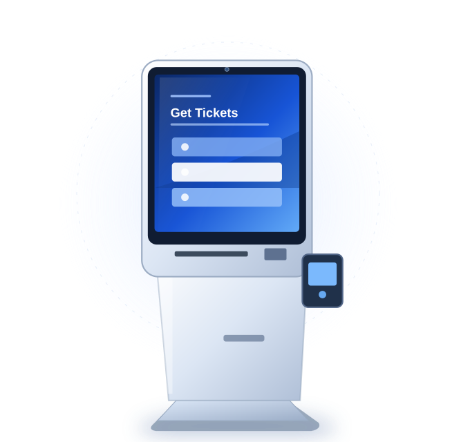

TICKETING EXPERIENCE
Ticketing Kiosks
Ticket issuing and queue management terminals for customer-facing service locations.
Ticketing kiosks can be configured around queue assignment, ticket printing and reservation lookup. Integration scope depends on the ticketing platform, print format and expected peak usage.
Configuration scope
Options to discuss for your project. Final specifications and module compatibility depend on the selected platform and requirements.
- Touchscreen configuration
- Thermal printer accommodation
- QR or barcode scan module
- Network and remote-maintenance requirements
- Custom cabinet and brand graphics
Typical applications
01
Transport and attractions
02
Hospitals and public service
03
Events and queue management
Before you request a quote
What ticket size and printing technology are used?
Share the answer together with your target market, quantity and schedule so the configuration can be assessed.
What is the expected peak transaction volume?
Share the answer together with your target market, quantity and schedule so the configuration can be assessed.
Will the terminal connect to a queue or reservation system?
Share the answer together with your target market, quantity and schedule so the configuration can be assessed.
Request a quote
Send your requirements, preferred dimensions, peripherals and estimated order volume. We reply with the questions that still need answers and the next step.
Reference units in this category
Terminals from our build range that serve this category. Each page lists the modules visible on the unit and the operating systems supported.